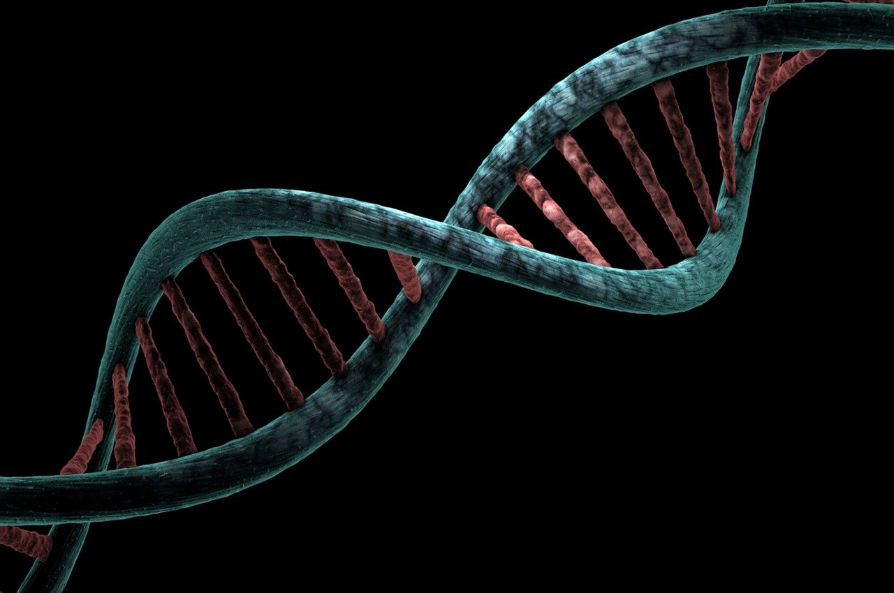
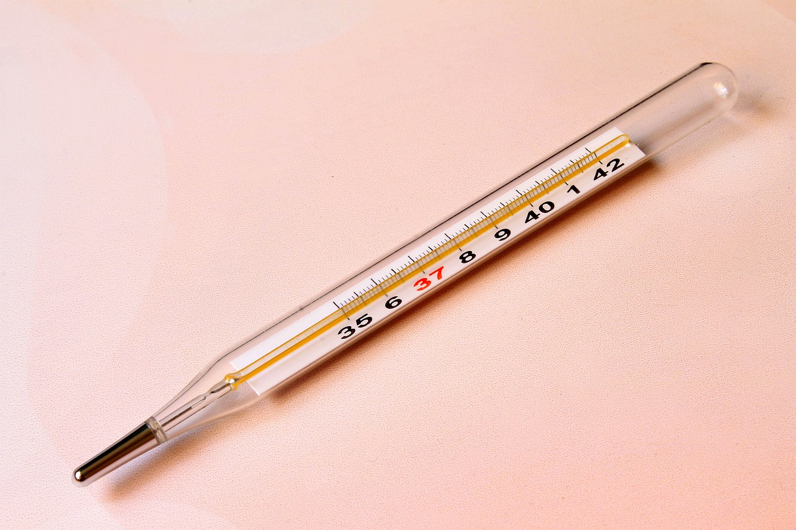

Chemical Poisons
Chemical poisons are substances that cause harm when ingested, inhaled, or absorbed through the skin. They can include pesticides, household cleaners, and industrial chemicals.
Plant Toxins
Plant toxins are toxic substances produced by plants as a defense mechanism against herbivores. Examples include ricin from castor beans and cyanogenic glycosides found in certain fruits.
Animal Toxins
Animal toxins are poisonous substances produced by animals for various purposes, including defense and predation. Examples include snake venom, bee venom, and poison dart frog toxins.

Biological Toxins
Biological toxins are toxins produced by living organisms, such as bacteria, fungi, and algae. Examples include botulinum toxin produced by Clostridium botulinum bacteria and mycotoxins produced by certain molds.
Radioactive Toxins
Radioactive toxins are substances that emit harmful radiation, leading to cellular damage and potential health hazards. Examples include uranium, plutonium, and cesium.

Metallic Toxins
Metallic toxins are toxic elements or compounds containing metals that can cause harm to living organisms. Examples include lead, mercury, and arsenic.
